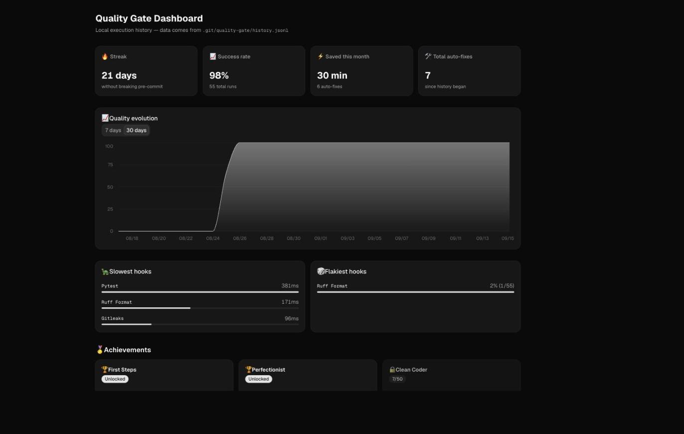

Single binary
Zero runtime dependencies — no Python, Node.js or external tools required. Download it and run it.
Zero depsGo Quality Gate is a single binary with no runtime dependencies that detects your project's languages and runs the right linters, formatters and security checks on every commit or push. Point it at a repo with Go, Python, Node.js — or all three at once.
go install github.com/dmux/go-quality-gate/cmd/quality-gate@latestdocker run --rm ghcr.io/dmux/go-quality-gate:latest --versionPrefer a binary? Grab the latest release for your OS, then run quality-gate --init && quality-gate --install.
No Python, no Node.js runtime, no account — just a binary that knows how to run the tools you already trust, and get out of the way.
Zero runtime dependencies — no Python, Node.js or external tools required. Download it and run it.
Zero depsDetects your project's languages and installs and configures the right quality tools automatically.
Auto-detectedGo, Python, JavaScript, TypeScript and more — in the same repository, with per-language detection.
Language-agnosticSpinners, execution timing, real-time feedback, and structured JSON output ready for CI/CD.
Real-timeAutomatic secret scanning with Gitleaks, wired straight into your commit workflow to prevent leaks.
GitleaksInstant execution without interpreters — built with Go for maximum speed and efficiency.
CompiledAutomatically fixes formatting and linting issues in place with a single --fix flag.
Clean JSON output and predictable exit codes, built for automation pipelines and GitHub Actions.
JSON outputSeamless integration with pre-commit and pre-push hooks — quality checks run themselves.
pre-commitCommits that passed the gates carry a Quality-Gate trailer bound to their exact content.
quality-gate verify and a ready-made GitHub Action reject commits that skipped the gates.
doctor spots missing or tampered hooks; --install --global gates every repo on a machine.
Git hooks can be skipped with --no-verify. Now every commit that passed your checks is
watermarked with a trailer bound to its exact content — and CI can refuse the ones that were not.
quality.yml is stored.-m or your editor, as usual.Quality-Gate trailer.quality-gate verify and re-runs the checks.# once per repository: pre-commit, commit-msg and pre-push
quality-gate --install
quality-gate doctor
git commit -m "feat: add login"
# ✅ Gitleaks passed (41ms)
# 🔏 Commit watermarked by quality-gate.
git log -1 --format='%(trailers)'
# Quality-Gate: v1.3.0; tree=db228f6d…; config=sha256:4feac6c2…; checks=3/3
quality-gate verify --range origin/main..HEAD
# ✅ 85490328cede attested
# All 1 commit(s) passed the quality gate.| Situation | What happens |
|---|---|
git commit --no-verify | No hook runs, so the commit has no watermark. verify reports missing. |
QG_SKIP="prod hotfix" git commit | Checks are skipped, but the commit records Quality-Gate-Skipped: prod hotfix. Accepted only with --policy allow-skip. |
git commit --amend | Hooks run again and the watermark is replaced. With --no-verify, the old one no longer matches: tree-mismatch. |
| Rebase or cherry-pick that changes content | The old watermark no longer matches (tree-mismatch). Recommit with hooks enabled. |
| Staged files change after the checks | No watermark, with a warning. Commit again to re-run the checks. |
| Commit made by an AI agent via MCP | run_quality_checks records the watermark too. |
The watermark stops casual bypasses and leaves an audit trail, but a trailer can be typed by hand.
Make the quality-gate CI job a required status check — it re-runs the gates, and that is what makes them mandatory.
See the usage guide for the full walkthrough.
Every run, and every --fix, is appended to a local history log. Two new commands turn
that history into something you'll actually want to look at — with nothing ever leaving your machine.
quality-gate ui.
The same engine backs the CLI, the Git hooks, CI and the MCP server — so what you see here is exactly what runs in each of them.
# 1. Download the binary for your platform (or `go install`, see Installation)
curl -fsSL -o quality-gate https://github.com/dmux/go-quality-gate/releases/latest/download/quality-gate-linux-amd64
chmod +x quality-gate && sudo mv quality-gate /usr/local/bin/quality-gate
# 2. Initialize — detects your languages and writes quality.yml
cd your-project
quality-gate --init
# 3. Install the Git hooks (pre-commit, commit-msg, pre-push) and check them
quality-gate --install
quality-gate doctor
# 4. That's it — checks run automatically and the commit is watermarked
git commit -m "feat: new feature"
# Once you've run it a few times:
quality-gate stats # streaks, achievements, time saved
quality-gate ui # local web dashboardtools:
- name: "Gitleaks"
check_command: "gitleaks version"
install_command: "go install github.com/zricethezav/gitleaks/v8@latest"
- name: "Ruff (Python)"
check_command: "ruff --version"
install_command: "pip install ruff"
hooks:
security:
pre-commit:
- name: "Security Check"
command: "gitleaks detect --no-git --source . --verbose"
output_rules:
on_failure_message: "Secret leak detected!"
python-backend:
pre-commit:
- name: "Format Check (Ruff)"
command: "ruff format ./backend --check"
fix_command: "ruff format ./backend"
output_rules:
show_on: failure
on_failure_message: "Run 'quality-gate --fix' to format."
typescript-frontend:
pre-commit:
- name: "Format Check (Prettier)"
command: "npx prettier --check 'frontend/**/*.{ts,tsx}'"
fix_command: "npx prettier --write 'frontend/**/*.{ts,tsx}'"# Automatic execution via Git hooks
git commit -m "feat: new feature"
# Manual execution
quality-gate pre-commit
# With automatic fixes
quality-gate --fix pre-commit
# JSON output for CI/CD pipelines
quality-gate --output=json pre-commit
# Verify commit watermarks (e.g. in CI)
quality-gate verify --range origin/main..HEAD
# Skip the checks on purpose, leaving an audit trailer
QG_SKIP="prod hotfix" git commit -m "fix: hotfix"
# Gate every repository on this machine that has a quality.yml
quality-gate --install --global
# Streaks, achievements and time saved
quality-gate stats
# Local web dashboard
quality-gate ui
# Check version
quality-gate --version{
"mcpServers": {
"go-quality-gate": {
"command": "./quality-gate",
"args": ["mcp"]
}
}
}name: Quality Gate
on: [pull_request]
jobs:
quality-gate:
runs-on: ubuntu-latest
steps:
- uses: actions/checkout@v4
with:
fetch-depth: 0 # verify needs the PR commits
- uses: dmux/go-quality-gate@main
with:
policy: strict # or allow-skip to accept QG_SKIP commits
run-checks: "true" # re-run the checks, not just the watermark
# Then mark the job as a required status check on main.A single Go process detects your languages, runs the right hooks, and appends every result to a local history log — which is all the terminal stats and the web dashboard read from.
quality-gate mcp starts a real Model Context Protocol server over stdio, built on the
official mark3labs/mcp-go SDK (v0.56.0). It reports the binary's own version
(v1.2.3) as its MCP protocol version, and every tool call runs through the exact same
QualityGateService the CLI and Git hooks use — not a wrapper, not a re-implementation.
Both take the same hookType your quality.yml already defines —
pre-commit, pre-push, or anything you've named — so an agent's result is
exactly what a human running the binary would have seen.
# Start the server over stdio
quality-gate mcp
# Point your client at it — .mcp.json (Cursor), Claude
# Desktop's config, or any client that speaks MCP over stdio:
# { "mcpServers": { "go-quality-gate":
# { "command": "./quality-gate", "args": ["mcp"] } } }
# Then just ask:
# "Run the pre-commit checks and auto-fix anything that fails."
# The agent calls, with no glue code:
# run_quality_checks({"hookType": "pre-commit"})
# -> "All quality checks passed successfully.
#
# Hook: gofmt Check
# Command: gofmt -l .
# Status: SUCCESS
# Duration: 42ms
# ..."
#
# run_auto_fix({"hookType": "pre-commit"})
# -> "Auto-fix commands executed successfully."Detected automatically per language — and anything else is one quality.yml entry away.
| Ecosystem | Status | Tools |
|---|---|---|
| Go | Built-in | gofmt, goimports, golangci-lint, go vet, gosec |
| Python | Built-in | black, ruff, isort, flake8, mypy, bandit |
| Node.js | Built-in | prettier, eslint, npm audit, tsc |
| Universal | Built-in | gitleaks, shellcheck, hadolint, yamllint |
| Custom | Config-only | Any command-line tool that returns a proper exit code — wire it in through quality.yml |
Deliberate design decisions, not a backlog. It targets one job: run the right tools, locally, at the right time.
It orchestrates gofmt, ruff, eslint, gitleaks and friends — it doesn't reimplement them.
It runs where you run it: in a local hook, or as a step in your own CI. There's no server to sign up for.
Any tool with a command and an exit code can be wired into quality.yml.
stats and ui read a local JSONL log. Nothing is ever sent anywhere.
Being local by default is the point — a quality gate you have to trust with your source code shouldn't also ask you to trust it with a network connection.
Free and MIT-licensed. No account, no API key, no cloud bill — just a binary and one YAML file.